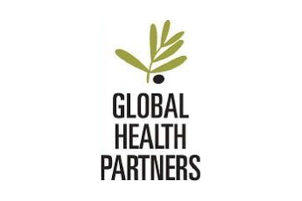
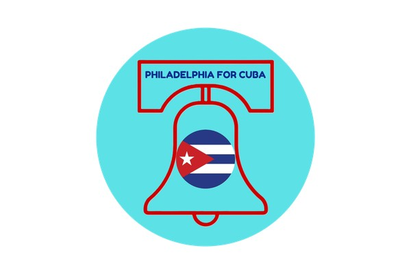
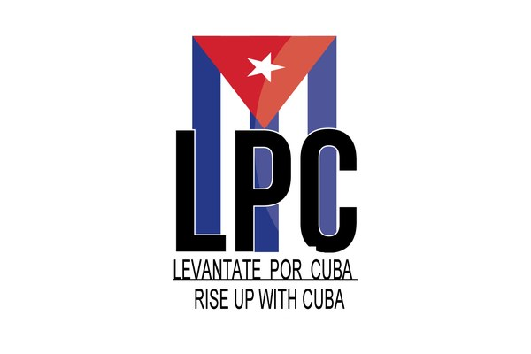
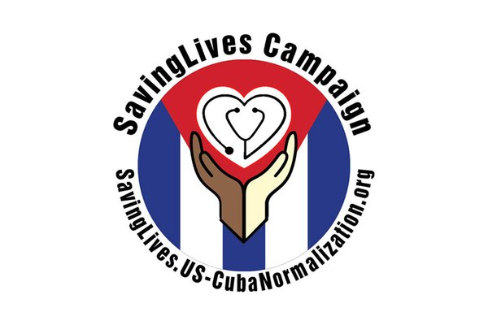
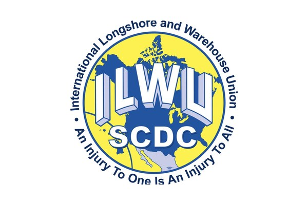

Our Logistics Coalition
PAMA’s medical supply logistics program works together with coalition partners, fiscally sponsored programs and generous donor organizations. Together, we are here to serve underserved communities.
Coalition partners
Our coalition partners work alongside PAMA’s logistics team to gather, move and deliver medical supplies to the clinics and communities that need them most.

Fiscally sponsored programs
PAMA serves as fiscal sponsor for Philadelphia for Cuba and Levántate por Cuba, supporting their community work. Learn about P4C in Philadelphia


Organizations that donate to our logistics team
These organizations have made donations that help our logistics team ship supplies. We are grateful for their generosity.


Organizations are listed in appreciation of their partnership or donations. A listing does not mean an organization endorses PAMA or its programs.
How the logistics program works
The logistics side of our work is how donated supplies become care. Each step is documented so partners and donors can follow every shipment.

Gather
Partners, suppliers and community supply drives donate medical supplies, and cash gifts buy the items clinics ask for most.

Sort and document
Volunteers sort, scan and palletize every item, keeping a chain-of-custody record for each pallet.

Score and ship
Each shipment is scored with our Solidarity Supply Index, then shipped with logistics partners.

Deliver and verify
Receiving clinicians sign for and photograph each delivery, so every donation can be traced to the clinic it reached.


Join the coalition
Community groups, unions, medical societies, suppliers and institutions can support the logistics program by hosting supply drives, donating supplies, or volunteering at the warehouse.